01 / People
The People
The owners, founders, technicians, craftspeople, apprentices, specialists, and others whose knowledge gives the operation its character.
Every specialized business has a world around it: people, tools, materials, decisions, places, history, and ways of working that make sense once you are inside—but are almost invisible from the outside.
P1Lab goes there. We learn how the work works, follow the connections, and build a permanent record that lets people outside the operation see what the people inside already know.
A Field Record begins with the world itself—not with a predetermined shot list or a package of deliverables.
P1Lab spends time on site. We observe the work, talk with the people who know it, follow the operation, and learn what makes the place work.
We photograph people while they work. We record tools, materials, spaces, finished objects, unfinished work, decisions, problems, solutions, and the physical traces of the operation. We listen to the language people use when they talk about what they do.
Then we build the record around what we learned.
The result may be a focused field record, a substantial company history, a hardbound master publication, an archival record, or a larger historical edition. The form follows the subject.
The people doing the work have the knowledge. Our job is to enter that knowledge from another direction and make the connections visible to someone who has never been inside.
A yacht restoration shop may be a place where experienced people solve difficult problems every day. A fabrication shop may simply be where work gets done. A cabinetmaker may think about grain, tooling, joinery, tolerances, and sequence without giving those things a second thought.
P1Lab enters from the outside. We learn from the people inside, then look for the larger connections that can make the world legible to someone encountering it for the first time.
The result is not a simplification of the work. It is a wider view of it.
A restoration can lead into materials, engineering, design, history, stewardship, patience, skilled hands, and the people who keep old knowledge alive. A fabrication shop can lead into metallurgy, measurement, machinery, judgment, industrial history, and the long human practice of making things well.
Every operation is different. These are not a checklist but the places we look when learning how a world works.
The owners, founders, technicians, craftspeople, apprentices, specialists, and others whose knowledge gives the operation its character.
What actually happens: the sequence, movement, repetition, concentration, interruption, adjustment, inspection, and completion.
The building, yard, shop, vessel, landscape, storage, machinery, light, weather, and physical conditions that make the work possible.
Wood, metal, stone, fabric, paint, composites, machinery, components, ingredients, and the physical behavior that the work must understand.
Judgment, adaptation, problem-solving, experience, and the small choices that separate simply completing a task from knowing how to do it well.
Where the enterprise came from, who built it, what changed, what endured, and what knowledge is being carried forward.
Illustrative production spreads showing how field photography, interviews, research, and editorial work are assembled into a permanent documentary record.
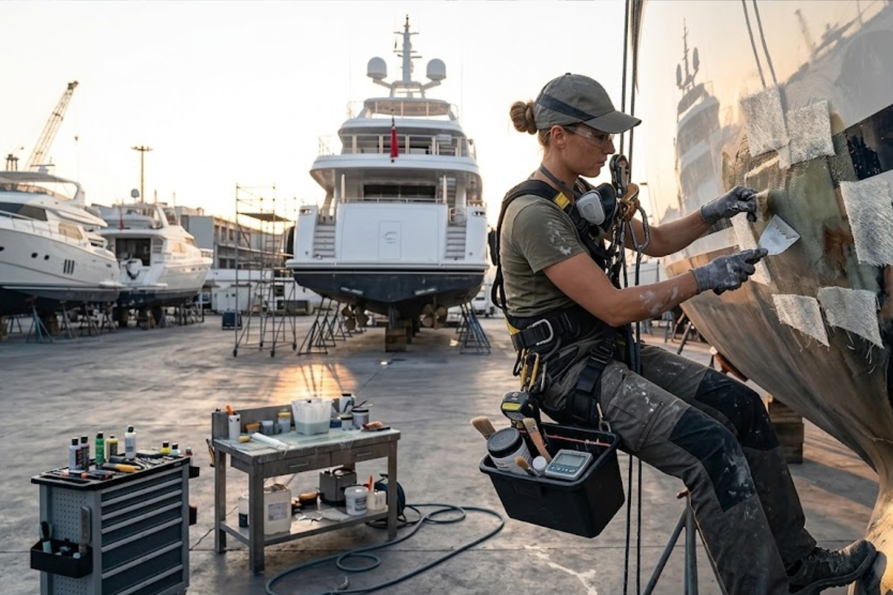
Active marine service documented in the field: vessel, technician, tooling, working environment, and physical intervention recorded as one operation.
Field photography follows the operation rather than a predetermined shot list—recording the people, vessel, tools, sequence, decisions, and physical conditions that define the work.
“The record follows the operation. We do not ask the work to stop being work in order to photograph it.”
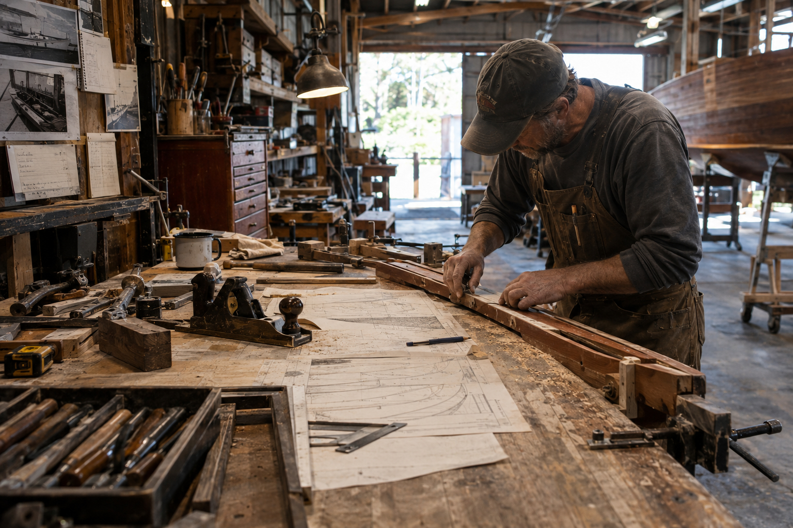
Hands, tooling, material, measurement, partially completed work, and the shop environment treated as one documentary field.
The record follows the movement from stock to finished object: measurement, setup, tool control, hand position, adjustment, fabrication, inspection, and completion.
“A finished object tells only part of the story. The shop, the tools, and the decisions behind it complete the record.”
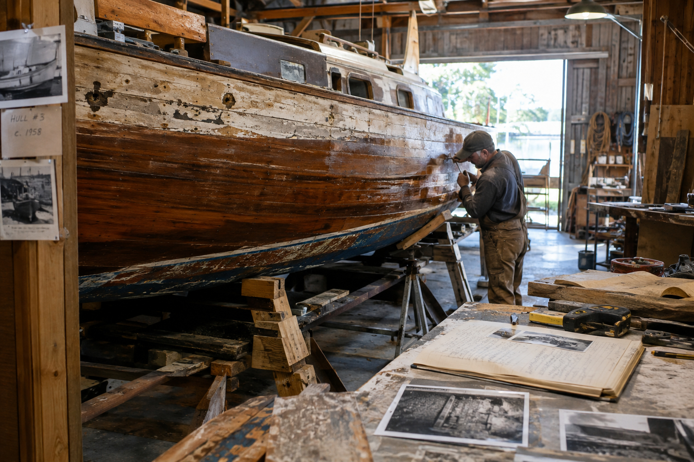
An object in process: condition, tools, disassembly, material evidence, craftsmanship, and return toward completed form.
Restoration fieldwork documents not only the returned object, but the condition, provenance, materials, interventions, and knowledge encountered along the way.
“The finished restoration is the final state. The record preserves everything that had to be understood to reach it.”
Selected independent studies demonstrate the observational and editorial methods applied to commissioned Field Records. Client commissions are published only with permission.
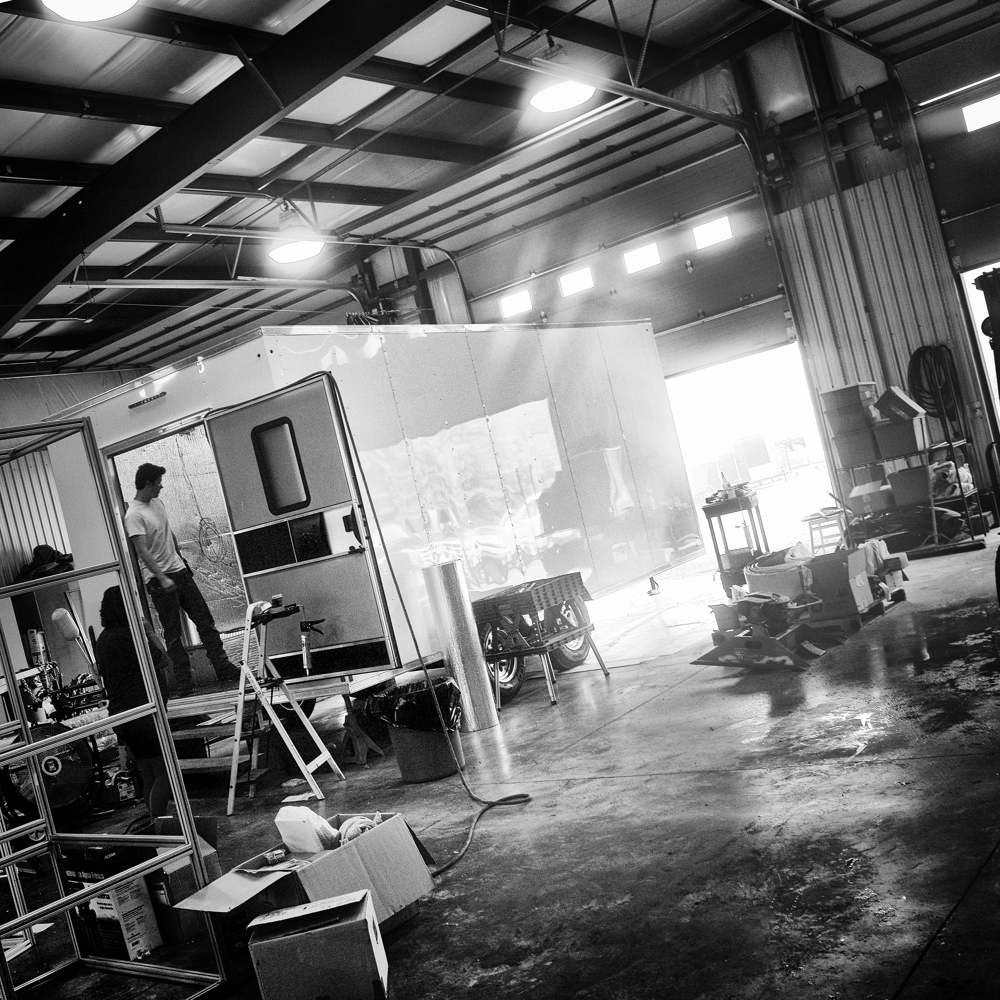
Commissioned Field Records: Converting Active Operations into Permanent Archives.
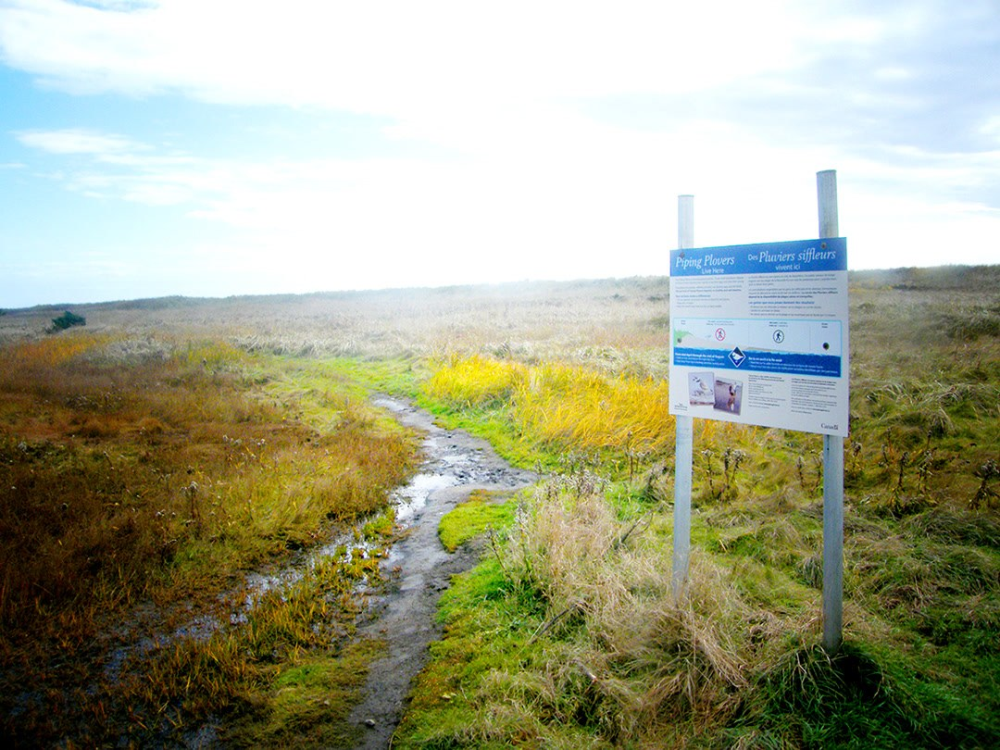
The marshland perimeter and regulatory signage establish the remote ecological boundary where local trade and shoreline operations take place. Capturing these outlying markers frames the physical territory before operations begin, anchoring the documentary record to its specific geography.
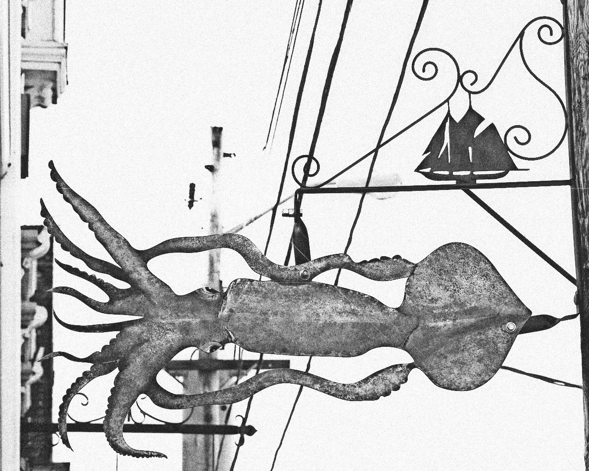
A custom forged trade sign hangs above the harbor, capturing the material heritage and localized identity of maritime commerce. Such handmade objects and specialized markers anchor the historical record before modern standardization erases them. Processed via proprietary deterministic signal-conditioning pipeline prior to RIP routing.
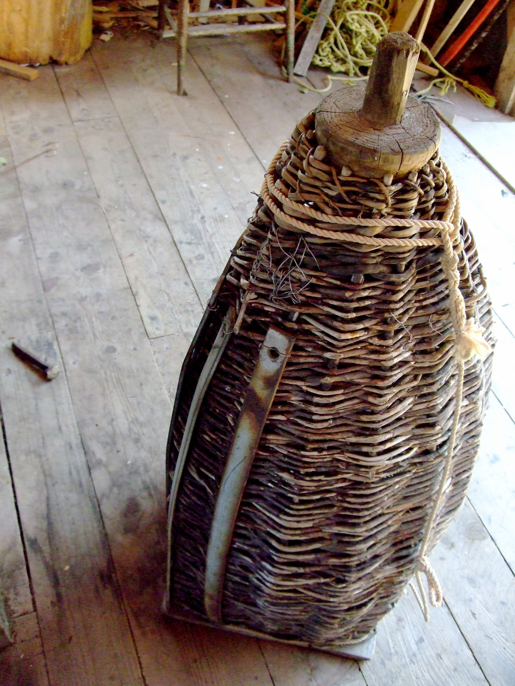
Material surface, form, and age recorded as physical evidence. Traditional woven wickerwork eel basket trap.
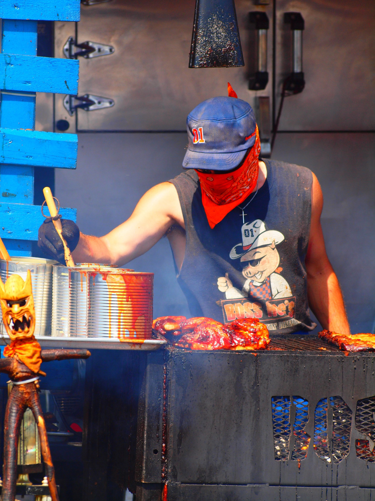
Unscripted human posture and manual technique captured during active work. The pit master tends the grill line during peak service, preserving the unscripted rhythm and sensory environment of traditional trade work. Such ephemeral operations disappear entirely without a permanent documentary record.
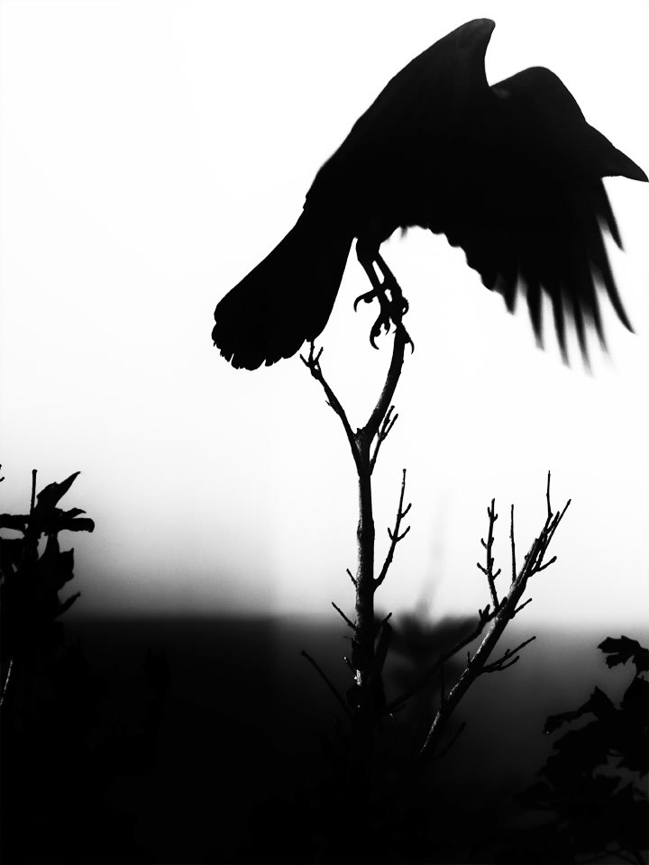
Avian silhouette. This high-contrast field study demonstrates rigorous visual editorial capability, utilizing custom signal processing to optimize dynamic range for print. It captures the natural indicators of the working perimeter, transforming fleeting wildlife moments into a disciplined documentary record.
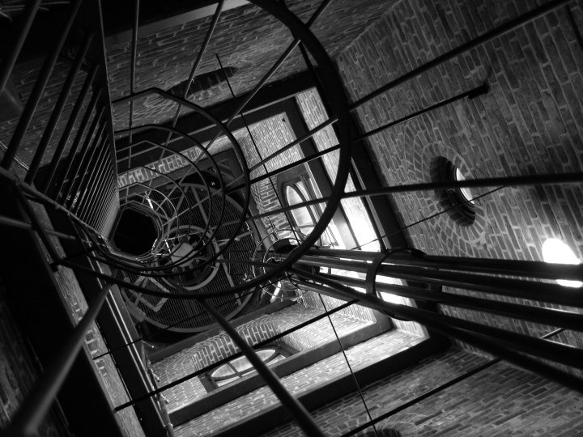
Line, tension, and structural geometry recorded under direct light. Field records of disappearing trades, industrial environments, and active workshops.
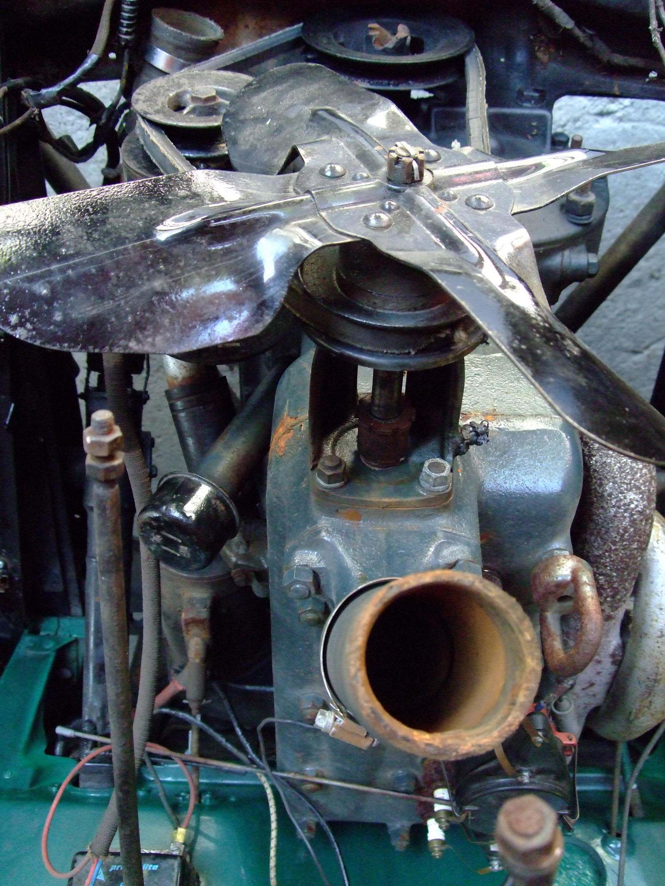
A “Make-and-Break” marine gasoline engine, specifically an Acadia or Atlantic engine, which played a monumental role in the maritime and industrial history of Atlantic Canada. Commissioned Museum Collection Photo.
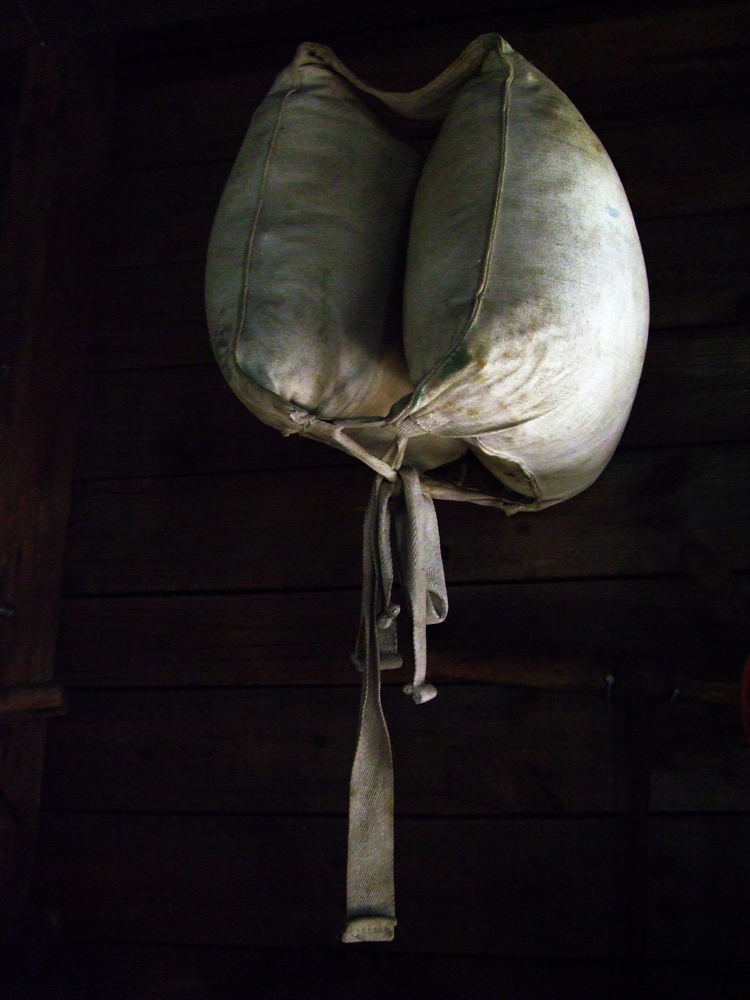
Living History Museum. Physical Object. Natural Lighting. Vintage canvas life jacket. Commissioned Museum Collection Photo.
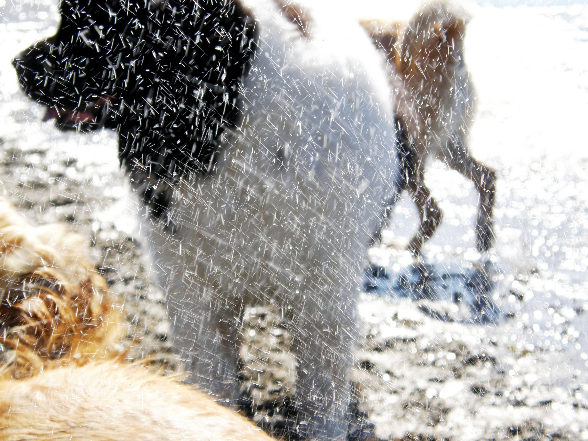
Raw field study capturing fleeting physical mechanics and active environments that ordinarily vanish without a permanent record. By integrating high-speed observation with rigorous documentary craft, we transform unscripted, dynamic field operations into enduring published monographs.
Photographs can show what happened. The people doing the work can tell us why.
During field work, P1Lab conducts structured conversations with founders, owners, technicians, craftspeople, specialists, and others whose experience gives the operation its depth.
These conversations may cover company history, trade vocabulary, difficult jobs, important decisions, materials, tools, mistakes, discoveries, people who taught the work, and changes that shaped the enterprise.
The purpose is not to turn specialists into spokespeople. It is to let the people who actually know the work explain it in their own language.
A Field Record can become a physical object that remains after the assignment, the project, and the people involved have moved on.
P1Lab brings field observation, photography, research, oral history, editorial work, design, and publishing together in a single practice.
The result may include a master documentary archive, organized digital assets, source material, interviews, research files, and a custom physical publication.
The physical book gives the enterprise a durable way to say: this is what this place is, this is how this work is done, and these are the people who know it.
It can sit in an owner's office, a boardroom, a reception area, a family library, an institutional archive, or with the people who will inherit the work.
P1Lab has spent more than three decades moving between documentary photography, publishing, research, systems development, and the physical record.
National Guitar — documentary production concerning the making of guitars, with worldwide distribution.
Independent monographic publishing, technical research, oral history, editorial production, and long-form documentary work.
Field work across museums, historical subjects, natural history, food, material culture, places, and working environments.
More than 31 books published across documentary, research, cultural, technical, and subject-specific projects.
Every commission begins with the subject itself. Scope is established after P1Lab understands the operation, the people involved, the history, and what the finished record needs to accomplish.
A focused record of one distinctive operation, process, facility, restoration, build, or working environment.
A comprehensive record of the enterprise—its people, place, work, history, processes, objects, and finished output.
A substantial historical record intended to preserve the enterprise, its knowledge, and its way of working beyond the present generation.
Field work may range from a concentrated assignment to a multi-phase historical project. The final publication, archive, and delivery structure are developed around the actual subject rather than a fixed package.
P1Lab's South Florida field desk is based in Based in West Palm Beach, Florida, with particular interest in owner-led operations where specialized knowledge, skilled work, physical environments, and long experience intersect.
South Florida contains an unusually dense concentration of marine, fabrication, restoration, construction, mechanical, aviation, architectural, horticultural, and specialty trades.
These are working worlds. P1Lab goes into them, learns how they operate, and builds records that can be understood by people who may never otherwise cross the threshold.
The field desk operates from Jupiter and works within practical reach of the specialized businesses, yards, workshops, restoration facilities, working waterfronts, and other operations of the region.
P1Lab is accepting a limited number of commissioned Field Records in South Florida. If your business, workshop, facility, restoration, trade, or operation has a world worth understanding, write to the field desk.
Contact the Field Desk